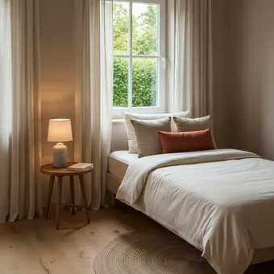
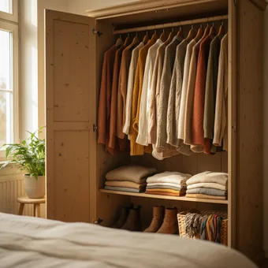
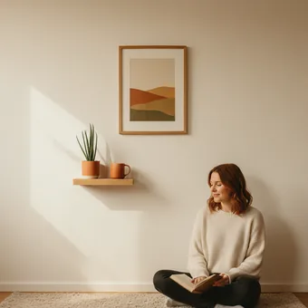
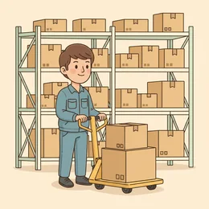
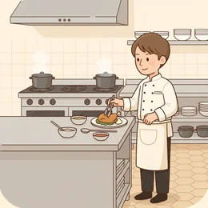
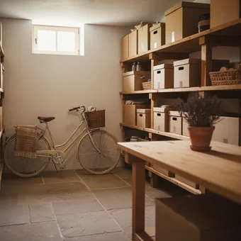

deutschoderwas · Sprechclub · Woche 3 · Strang B · Teil 2 · Donnerstag, 1. Oktober
Wohin oder wo? Der Fall entscheidet
Auf den Tisch oder auf dem Tisch? Ein einziger Buchstabe, und der Satz bedeutet etwas anderes. Am Dienstag ging es um das Verb — heute um das kleine Wort dahinter.
Dein Niveau
Gleiches Thema, andere Sätze. Wechsle jederzeit — probier ruhig beide Seiten aus.
Neun Präpositionen, die beides können
in, an, auf, über, unter, vor, hinter, neben, zwischen. Nach allen neun kann Akkusativ oder Dativ stehen — und du entscheidest das, nicht das Wörterbuch. Die Frage lautet immer gleich: Wohin? oder Wo?

Sag einen Satz mit auf den Tisch und einen mit auf dem Tisch.
Welche der neun Präpositionen benutzt du am häufigsten?
Gibt es in deiner Sprache auch zwei Formen für Ziel und Ort?
Warum reicht ein einziger Buchstabe, um die Bedeutung zu drehen?
Wann merkt ein Muttersprachler den Fehler sofort — und wann gar nicht?
Welche Präposition ist bei dir am unsichersten?
🔑 Die ganze Regel in einem Satz: Bewegt sich etwas dorthin? → Akkusativ. Ist es schon dort? → Dativ. Und das Verb sagt es dir: legen, stellen, setzen, hängen → Akkusativ. liegen, stehen, sitzen, hängen → Dativ.
Kurz zurück: Dienstag in zwei Minuten
Falls du Teil 1 verpasst hast — das hier reicht, um heute mitzumachen.
legenliegenstellenstehensetzensitzenhängensteckenaufräumender Platz
Handlung ist regelmäßig, Zustand nicht
So ging der SatzIch habe das Bild aufgehängt. Es hat jahrelang dort gehangen.
Die Form entscheidet das Verb
So ging der SatzDas Buch liegt, die Flasche steht, das Bild hängt.
Nenn ein Paar und sag beide Sätze — Handlung und Zustand.
Woran erkennt man im Perfekt, ob es eine Handlung war?
Warum steht eine Flasche und liegt ein Buch?
🔁 Zu zweit, dreißig Sekunden: Einer nennt einen Gegenstand, der andere sagt Handlung und Zustand. Fünf Gegenstände — und ab heute achtet ihr zusätzlich auf den Artikel dahinter.
Neun Präpositionen und drei Wörter für die Lage
Sagt jede Präposition laut — und gleich beide Beispielsätze hinterher. Erst Akkusativ, dann Dativ.

in
„Ich lege es in den Schrank. — Es liegt im Schrank.“
💡 Die häufigste der neun. Und die Verschmelzungen merken: in dem = im, in das = ins.

an
„Ich hänge es an die Wand. — Es hängt an der Wand.“
💡 an für senkrechte Flächen und Ränder: an die Wand, an den See, ans Fenster. Verschmelzung: an dem = am.
auf
„Ich lege es auf den Tisch. — Es liegt auf dem Tisch.“
💡 auf für waagerechte Flächen — Tisch, Boden, Regal. Keine Verschmelzung: es bleibt auf dem, nicht „aufm“.
⬆️
über
„Ich hänge die Lampe über den Tisch. — Sie hängt über dem Tisch.“
💡 Der Unterschied zu auf: über berührt nicht. Die Lampe über dem Tisch schwebt, das Buch auf dem Tisch liegt auf.
⬇️
unter
„Ich stelle die Kiste unter das Bett. — Sie steht unter dem Bett.“
💡 Auch übertragen sehr häufig: unter Druck, unter Freunden, unter anderem.
vor
„Ich lege den Teppich vor das Bett. — Er liegt vor dem Bett.“
💡 Räumlich mit beiden Fällen, zeitlich immer mit Dativ: vor dem Essen, vor drei Tagen.
🚪
hinter
„Ich stelle den Besen hinter die Tür. — Er steht hinter der Tür.“
💡 Das Gegenstück zu vor. Und eine schöne Wendung: etwas hinter sich haben — es ist geschafft.
neben
„Ich hänge die Jacke neben den Mantel. — Sie hängt neben dem Mantel.“
💡 Für die genaue Beschreibung unentbehrlich: direkt neben, gleich neben, schräg neben.

zwischen
„Ich stelle die Kiste zwischen die Regale. — Sie steht zwischen den Regalen.“
💡 Braucht immer zwei Bezugspunkte. Im Dativ Plural: zwischen den Regalen — mit -n am Ende.
🧭
wohin
„Wohin soll das Regal? — An die Wand.“
💡 Die Antwort steht immer im Akkusativ. Umgangssprachlich zerlegt: Wo soll das hin?
📍
wo
„Wo steht das Regal? — An der Wand.“
💡 Die Antwort steht immer im Dativ. Merksatz: Wo mit o wie ohne Bewegung.
🔙
woher
„Woher hast du das? — Aus dem Keller.“
💡 Die dritte Frage, die selten geübt wird. Die Antwort kommt mit aus, von oder vom — immer Dativ.
💡 Spiel: Einer nennt eine Präposition, der andere sagt in zwei Sekunden beide Sätze — einmal mit Akkusativ, einmal mit Dativ. Neun Präpositionen, dann tauschen.
Ein Buchstabe, zwei Bedeutungen
Erst das System, das hinter allen neun Präpositionen steckt. Darunter drei Satzpaare, bei denen fast alle danebenliegen.
➡️
Wohin? → Akkusativ
Etwas bewegt sich zu einem Ziel.
Ich lege es auf den Tisch. · in den Schrank · an die Wand
📍
Wo? → Dativ
Etwas ist schon dort und bleibt.
Es liegt auf dem Tisch. · im Schrank · an der Wand
🔙
Woher? → immer Dativ
Der Ausgangspunkt, mit aus oder von.
Ich hole es aus dem Schrank. · vom Tisch
✅ So sagt man es
Ich lege das Buch auf den Tisch.
Warum das stimmtDas Buch bewegt sich zum Tisch hin — also Wohin? und damit Akkusativ: auf den Tisch.
❌ So nicht
Ich lege das Buch auf dem Tisch.
Das ProblemMit Dativ hieße es: Du liegst selbst auf dem Tisch und legst dort etwas hin. Das Verb legen verlangt hier immer Akkusativ.
✅ So sagt man es
Das Bild hängt an der Wand.
Warum das stimmtNichts bewegt sich — Wo? und damit Dativ: an der Wand. Das Zustandsverb hängen verrät es sofort.
❌ So nicht
Das Bild hängt an die Wand.
Das ProblemAkkusativ würde bedeuten, das Bild fliegt gerade zur Wand. Merksatz: Zustandsverb → Dativ, immer.
✅ So sagt man es
Setz dich auf den Stuhl.
Warum das stimmtsich setzen ist eine Bewegung — vom Stehen zum Sitzen. Also Akkusativ: auf den Stuhl.
❌ So nicht
Setz dich auf dem Stuhl.
Das ProblemDativ hieße: Du sitzt schon dort und setzt dich noch einmal. Erst wenn du sitzt, gilt: Ich sitze auf dem Stuhl.
Du musst gar nicht über den Fall nachdenken. Schau auf das Verb:
legen, stellen, setzen, hängen, stecken (Handlung) → immer Akkusativ.
liegen, stehen, sitzen, hängen, stecken (Zustand) → immer Dativ.
Bei anderen Verben frag Wohin? oder Wo?: Ich gehe in die Küche (wohin) — Ich koche in der Küche (wo).
Und wenn du das Verb nicht sicher zuordnest: Kannst du „was?“ fragen? Dann ist es Handlung, also Akkusativ.
Merksatz für alles: Bewegung zieht den Akkusativ nach sich, Ruhe bleibt im Dativ.
⚖️ Kurzübung: Einer sagt einen Satz mit Akkusativ, der andere macht sofort den Dativ-Satz daraus. „Ich stelle die Vase auf den Tisch.“ — „Die Vase steht auf dem Tisch.“ Zehn Runden.
Vier Situationen, in denen der Fall zählt
Anweisen, beschreiben, korrigieren, nachfragen. Vier Bausteine — und in jedem entscheidet ein einziger Buchstabe.
1 · ➡️ Anweisen (Akkusativ) Stell das bitte auf …Leg es in …Häng es an …
So klingt esStell die Vase bitte auf den Tisch und leg die Post in die Schublade.
2 · 📍 Beschreiben (Dativ) Es liegt auf …Es steht in …Es hängt an …
So klingt esDie Vase steht auf dem Tisch, die Post liegt in der Schublade.
3 · 🔁 Umräumen Das kommt lieber …Stell das doch …Nimm es von …
So klingt esNimm die Kiste vom Schrank und stell sie unter das Bett.
4 · ❓ Nachfragen Wohin damit?Wo ist das jetzt?Woher hast du das?
So klingt esWohin soll der Karton? Und wo steht eigentlich der andere?
1 · ➡️ Genau anweisen Am besten stellst du es …Das käme gut zwischen …Häng es auf Augenhöhe an …
So klingt esAm besten stellst du die Lampe zwischen das Sofa und das Regal — und häng den Spiegel auf Augenhöhe an die Wand daneben.
2 · 📍 Genau beschreiben ganz hinten in …schräg gegenüber von …direkt über …
So klingt esDie Unterlagen liegen ganz hinten in der zweiten Schublade, direkt unter der grauen Mappe.
3 · 🔁 Etwas umstellen Ich würde es eher … stellenSo steht es zu sehr im WegDann käme mehr Licht …
So klingt esSo steht der Schrank zu sehr im Weg — ich würde ihn eher an die andere Wand stellen, dann kommt mehr Licht ins Zimmer.
4 · ❓ Sich vergewissern Meinst du auf oder über …?Soll es dorthin oder bleibt es …?Habe ich das richtig verstanden, dass …?
So klingt esMeinst du über den Tisch oder auf den Tisch? Und soll die Lampe dorthin — oder bleibt sie, wo sie ist?
Verb das Ziel Ort und Richtung Höflichkeit
🗣️ Sofort anwenden: Einer beschreibt einen Raum, den der andere nicht sieht — acht Gegenstände, jeder mit Präposition. Der andere zeichnet mit. Am Ende vergleicht ihr die Skizze mit der Beschreibung.
Vier Szenen — zwei Runden
Runde 1: Lest den Dialog zu zweit laut. Runde 2: Deckt die Zeilen von B ab und sprecht frei — die Hinweise reichen.
Dialog 1 · „Wohin mit dem Bett?“
Zwei Leute richten ein Schlafzimmer ein. Bei jedem Möbelstück fällt der Akkusativ — und danach sofort der Dativ.
A
Wohin stellen wir das Bett?
B
An die Wand gegenüber dem Fenster. Dann fällt morgens kein Licht drauf.
🗣️ an die Wand — Akkusativ, weil das Bett dorthin kommt.tippen = Hilfe zeigen
A
Und wenn es an der Wand steht, passt der Schrank noch daneben?
B
Wenn es an der Wand steht, bleiben zwei Meter — das reicht.
🗣️ Jetzt an der Wand — Dativ, weil es dort schon ist. Zweimal dieselbe Wand, zwei Fälle.tippen = Hilfe zeigen
A
Und der Teppich?
B
Den legen wir vor das Bett, dann steht man morgens nicht auf dem kalten Boden.
🗣️ vor das Bett (Akkusativ, Handlung) und auf dem Boden (Dativ, Zustand) — im selben Satz.tippen = Hilfe zeigen
A
Die Lampe?
B
Über das Bett hängen, aber nicht direkt darüber — sonst blendet sie.
🗣️ über das beim Aufhängen, darüber beim Zustand. Hör den Unterschied.tippen = Hilfe zeigen
Dialog 2 · „Wo liegt was?“
Ein Kollege sucht drei Dinge im Büro. Du weißt es bei allen dreien — und beschreibst mit Dativ, weil nichts sich bewegt.
A
Wo liegen die Verträge vom Montag?
B
In der zweiten Schublade, unter der grauen Mappe.
🗣️ Zweimal Dativ: in der Schublade, unter der Mappe. Nichts bewegt sich.tippen = Hilfe zeigen
A
Und der Stempel?
B
Der steht auf dem Regal neben dem Drucker.
🗣️ auf dem, neben dem — Zustand, also Dativ. Und der Stempel steht, weil er aufrecht ist.tippen = Hilfe zeigen
A
Ich lege ihn nachher zurück.
B
Leg ihn bitte wieder auf das Regal, nicht in die Schublade.
🗣️ Jetzt Akkusativ: auf das Regal, in die Schublade — weil er sich bewegt.tippen = Hilfe zeigen
A
Alles klar. Und wo hängt der Kalender?
B
Hinter der Tür. Den habe ich letzte Woche dorthin gehängt.
🗣️ hinter der Tür (Dativ, jetzt) und dorthin gehängt (Bewegung, damals). Beide Perspektiven.tippen = Hilfe zeigen

Dialog 3 · „Zwischen, über, unter“
Küchenschränke einräumen. Diesmal geht es um die schwierigeren drei Präpositionen — und um zwei Bezugspunkte.
A
Wohin mit den Gewürzen?
B
Zwischen die Öle und den Essig, dann hast du alles beisammen.
🗣️ zwischen braucht zwei Dinge. Und Akkusativ, weil die Gewürze dorthin kommen.tippen = Hilfe zeigen
A
Und jetzt stehen sie zwischen …?
B
Zwischen den Ölen und dem Essig. Perfekt so.
🗣️ Im Dativ Plural kommt ein -n dazu: den Ölen. Der klassische Stolperstein.tippen = Hilfe zeigen
A
Die Pfanne?
B
Häng sie über den Herd — da hängt schon der Topf.
🗣️ über den beim Aufhängen, schon der Topf als Zustand daneben.tippen = Hilfe zeigen
A
Und das Brett?
B
Das schiebst du unter die Spüle. Da liegt sonst nichts.
🗣️ unter die Spüle (Bewegung), da liegt (Zustand). Der Wechsel ist ganz normal.tippen = Hilfe zeigen

Dialog 4 · „Woher kommt das alles?“
Beim Ausräumen taucht ständig etwas auf. Jetzt kommt die dritte Frage dazu: Woher?
A
Woher kommt denn diese Kiste?
B
Die habe ich aus dem Schlafzimmer geholt. Da stand sie im Weg.
🗣️ aus dem — Woher ist immer Dativ. Und stand als Zustand hinterher.tippen = Hilfe zeigen
A
Und die Bilder?
B
Die kommen von der alten Wohnung. Die hingen früher über dem Sofa.
🗣️ von der — auch Woher, auch Dativ. Und hingen, weil sie dort waren.tippen = Hilfe zeigen
A
Sollen wir sie wieder aufhängen?
B
Ja, häng sie über das Sofa. Dort war früher genau der richtige Platz.
🗣️ Jetzt Akkusativ: über das Sofa. Dasselbe Sofa, andere Richtung.tippen = Hilfe zeigen
A
Und die Kiste?
B
Stell sie zurück ins Schlafzimmer, aber diesmal hinter die Tür.
🗣️ ins und hinter die — zwei Akkusative in einem Satz, weil beides Ziele sind.tippen = Hilfe zeigen
🎭 Und jetzt ihr: Spielt Dialog 1 noch einmal — aber A widerspricht bei jedem Möbelstück und schlägt einen anderen Ort vor. B muss jedes Mal beide Fälle richtig benutzen.
🧩 Neun Präpositionen, zwei Fälle
Diese neun heißen Wechselpräpositionen, weil bei ihnen der Fall wechselt. Alle anderen Präpositionen haben ihren Fall fest — nur diese neun lassen dich entscheiden.
Nach in, an, auf, über, unter, vor, hinter, neben, zwischen steht der Akkusativ, wenn etwas sich zum Ziel bewegt (Wohin?), und der Dativ, wenn etwas schon dort ist (Wo?). Die Verschmelzungen musst du kennen: in dem = im, in das = ins, an dem = am, an das = ans, auf das = aufs, von dem = vom.
➡️Wohin? → Akkusativin den Schrank · an die Wand · auf den Tisch
▾
📍Wo? → Dativim Schrank · an der Wand · auf dem Tisch
▾
🔙Woher? → aus, von + Dativaus dem Schrank · von der Wand · vom Tisch
▾
🔗Verschmelzungenin dem = im · in das = ins · an dem = am · an das = ans
WerIch
Handlungsverbstelle
Objektdie Vase
Wohin → Akkusativauf den Tisch.
Die neun Präpositionen, jeweils in beiden Fällen
Lies jede Zeile laut — erst Akkusativ, dann Dativ. Nach dem dritten Durchgang hörst du den Unterschied von allein.
🔵
maskulin
den → dem
auf den Tisch → auf dem Tisch
🔴
feminin
die → der
an die Wand → an der Wand
🟡
neutral
das → dem
über das Sofa → über dem Sofa
in den Schrank → im Schrankan die Wand → an der Wandauf den Tisch → auf dem Tischüber das Sofa → über dem Sofaunter das Bett → unter dem Bettzwischen die Regale → zwischen den Regalen
Die Falle: im Dativ Plural kommt ein -n dazu
Bei zwischen und überall dort, wo mehrere Dinge im Dativ stehen, bekommt das Nomen ein zusätzliches -n. Das vergisst fast jeder — und es fällt sofort auf.
➡️
Akkusativ Plural
die + Nomen unverändert
zwischen die Regale, auf die Stühle
📍
Dativ Plural
den + Nomen mit -n
zwischen den Regalen, auf den Stühlen
🚫
Ausnahmen
Plural auf -s oder schon auf -n
auf den Sofas · an den Türen
zwischen die Regale → zwischen den Regalenauf die Stühle → auf den Stühlenunter die Bücher → unter den BüchernAber nicht bei Plural auf -s: auf den SofasUnd nicht bei Plural auf -n: an den Türenin die Kisten → in den Kisten
🧱 Bau die Sätze selbst
Tippe die Teile in der richtigen Reihenfolge an. Danach auf „Prüfen“ — und den fertigen Satz laut lesen.
📖 Und jetzt im Zusammenhang
Ein Nachmittag, an dem eine Wohnung eingerichtet wird. Wähle in jeder Lücke das passende Wort.
Drei Fragen, in dieser Reihenfolge:
Steht ein Handlungsverb da? (legen, stellen, setzen, hängen, stecken) → Akkusativ, fertig.
Steht ein Zustandsverb da? (liegen, stehen, sitzen, hängen) → Dativ, fertig.
Anderes Verb? Dann frag Wohin? (Akkusativ) oder Wo? (Dativ).
Plural im Dativ? Dann hängt ans Nomen noch ein -n: zwischen den Regalen.
Und wenn gar nichts hilft: Sag den Satz mit dorthin oder dort. Passt dorthin, ist es Akkusativ. Passt dort, ist es Dativ.
🎭 Drei Räume, zwei Fälle
Zu zweit. Bei jedem Stück muss zuerst der Akkusativ-Satz fallen und danach der Dativ-Satz. Danach tauschen.
1 · Die Wohnung am Telefon einrichten
A steht in der neuen Wohnung, B ist am Telefon und sagt, wohin alles soll. B sieht nichts — also muss jede Angabe genau sein.
Wohin soll das Sofa?Und der Tisch?Steht das jetzt gut?Wo ist noch Platz?
Am besten an die Wand gegenüberZwischen das Fenster und das RegalDann steht es nicht im WegSchräg gegenüber vom Eingang
✅ Eine gute Runde enthältJede Anweisung kommt im Akkusativ, jede Rückmeldung im Dativ — und beide benutzen mindestens einmal zwischen.
2 · Der Suchdienst
A sucht fünf Dinge. B weiß, wo alle sind, sagt es aber erst nach einer Rückfrage genau genug.
Wo ist der Schlüssel?Auf dem Tisch?Woher kommt der denn?Und wohin soll er zurück?
Er müsste noch in der Jacke steckenDirekt unter den UnterlagenDen habe ich aus dem Auto geholtLeg ihn bitte wieder an den Haken
✅ Eine gute Runde enthältB benutzt bei jeder Antwort eine andere Präposition und wechselt korrekt zwischen Dativ (wo es ist) und Akkusativ (wohin es soll).
3 · Umgeräumt und nichts gefunden
A hat in der gemeinsamen Küche alles umgeräumt. B findet nichts mehr und fragt sich durch — bis klar ist, wo jetzt was steht.
Ich habe alles umgeräumtDie Teller sind jetzt …Warum steht das da?Stell das bitte zurück
Das Geschirr ist nach unten gewandertIch habe die Gläser nach oben gestelltSo kommt man leichter dranDann räumen wir es wieder um
✅ Eine gute Runde enthältA erklärt jede Veränderung mit beiden Sätzen — was er getan hat (Akkusativ) und wie es jetzt ist (Dativ).
🎴 Sprechkarten
Zieh eine Karte und sprich mindestens vier Sätze am Stück.
Deine Aufgabe
Tippe auf den Knopf.
⏱️ Die 90-Sekunden-Challenge
Ein Wort, anderthalb Minuten, freies Sprechen. Es muss nicht perfekt sein — es muss nur weitergehen.
Dein Wort
in den Schrank
1:30
Beschreib einen Raum von der Tür aus, dann trägt sich die Zeit von selbst:
Was siehst du zuerst? Gleich rechts neben der Tür steht …
Was hängt an den Wänden? Über dem Sofa hängt …
Was liegt herum? Auf dem Tisch liegt …
Was würdest du ändern? Ich würde das Regal an die andere Wand stellen.
Und wenn du unsicher bist: Sag beide Sätze. „Ich stelle es dorthin — dann steht es dort.“ Einer davon ist immer richtig.
⏱️ Spielregel: In jeder Runde müssen mindestens vier verschiedene Präpositionen vorkommen — und einmal ein Dativ im Plural. Der Partner zählt mit.
✅ Sitzt es schon?
8 Fragen. Tippe auf deine Antwort — die Erklärung kommt sofort.
✍️ Lückentext
Wähle in jeder Lücke das passende Wort.
📣 Danach laut: Geht die neun Präpositionen der Reihe nach durch und sagt zu jeder beide Sätze. Wer stockt, fängt bei in wieder an.
📮 Deine Hausaufgabe bis nächste Woche
Vier kleine Aufgaben, zusammen etwa 25 Minuten. Tippe eine an, wenn du sie erledigt hast.
💡 Warum das hilft: Die Wechselpräpositionen kommen in fast jedem zweiten Satz vor. Wer sie sicher hat, hört auf, mitten im Satz nachzudenken.
0 von 0 Aufgaben geschafft.
So sehen die Paare aus:
in: Ich lege es in den Schrank. — Es liegt im Schrank.
an: Ich hänge es an die Wand. — Es hängt an der Wand.
auf: Ich stelle es auf den Tisch. — Es steht auf dem Tisch.
unter: Ich schiebe es unter das Bett. — Es steht unter dem Bett.
zwischen: Ich stelle es zwischen die Regale. — Es steht zwischen den Regalen.